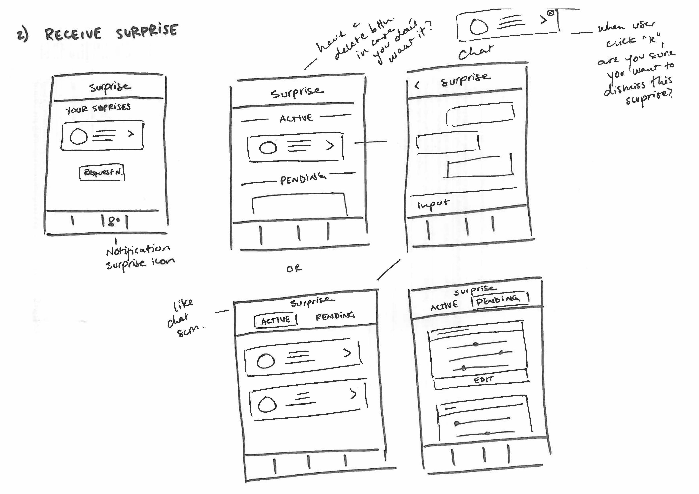

FriendHood - Surprise Feature
FriendHood is a platonic friendship mobile app for those who are looking for meet new and interested people in the city they live.
I joined FriendHood and its two founders and helped them to implement key features before their launch to the app store. One of the funnest features I had the opportunity to work on was the surprise feature in which users have the opportunity to get a surprise connection with someone either with similar or different interests. It was also interesting to work on a feature that other meeting, friendship, and dating Apps don't have.
The first surprise screen the users see when they want to use the feature
A screen explaining how the surprise feature works
Planning the feature
Since this feature was one of the last to be implemented before the App store and google store launch, we decided to keep it simple. We were also not sure about how many people would use the feature. After the launch however, there were already 9 people requesting a surprise in the first few days! I sketched three possible ideas which could work for the first version of the feature.
My first idea was to show a starting screen explaining the feature followed by a screen where you would choose with a slider if you want someone similar or different to you and finally a screen where you could choose your tendencies, which is an exisiting feature in profile in which you can choose what you prefer. For example if you tend to like cozy places or loud places, or outdoors activities or indoors. However, since we didn't know how many people would sign up for the surprise, and the people are paired manually, we decided to make it even more simple than this.
First brainstorming sketch
My second idea was to show something similar to the first flow but rather than having the specific tendencies, which would also make it more complicated for the user to grasp, I decided to just as two simple questions: in the first step, do you want someone different or similar? and in the second step, what category the similiraty or different should be in. But not knowing if we would have enough people to connect with a specific category, this version was also not ideal. After discussing with the marketing team and the developerwe decided the only question we should really be asking is the first one. I made digital wireframes based on this which I used to later make the final UI.
Digital wireframes made using google slides
Technical Challenges
The biggest technical challenge we had from the engineering side was how the user experience after placing the surprise request would be. The final wireframes assume that the user places the surprise, then while the connection is being made manually by one of our team-members, the user see the pending surprise screen and once the connection is made, the user can see the surprise is ready and can see who they can connect with. However, it was tricky to figure out what the timing would be in the back end and what was the best way to begin the interaction between the two new connected people. Through the copy, we managed to make the idea clear that once the user clicked on the image of the person they were connected to, they could find them in the chat section. However, we didn't manage to technically get the chat to open directly. And even so, would this be something the user would like? Or would they prefer to see the profile of the other user first? My favorite answer to this is always: user testing. Once there are enough users using this feature, we need to user test what works and what doesn't and then re-evaluate the technical implications of this.
While brainstorming how we could develop the feature, I thought of this idea which could work for the future. If users use the surprise feature a lot, there could be a specific chat feature that marks the surprise chats as special chats. However, the point of the feature is not meet someone new and after that the conversation should flow like all other chats so we dismissed this idea. Another reason for not going for this idea was thinking of all the possible outcomes: if users are able to cancel or reject a surprise, but one user still wants to connect with the person while the other doesn't, it becomes a tricky situation. This is why we decided to keep it as simple as possible and then validate with the users what they find could improve.

Additional brainstorming sketch
UI Design and Animations
Once we had a clear flow we had agreed on, I made the designs in sketch. After this, I started the most challenging part for me which was the animations. We decided to use Lotti by AirBnb which allows designers to make animations in After Effects and export them through a plug in called BodyMovin as a json file. My first challenge was trying to map the illustrations I made in sketch to the illustrations in After Effects. I worked closely with the developer to test the animations and make sure that they looked good withing the screen designs. It was also tricky to get the timing and the dimensions right for each animation. Finally we had a good outcome on iOS but for some reason the animations in Android were a little bit off. We are hoping we can figure this out soon and make amendments (even if most of the App users rely on the iOS version of the App).
The screen features in sketch
Ideas for what the illustrations could look like for the surprise feature
Ideas for what the illustrations could look like for the surprise feature
Conclusion and Future Lessons
The most challenging parts of this feature was figuring out the flow and foreseeing the technical implications there might be in implementing it. I had the privilage of working very close to a clever developer who was able to see these challenges and with our marketing expert that could tell us how the manually matching would work. The second challenge was relying on Lotti to get our animations to look seamless on all devices. With more time, I would have liked to have tested the Android versions and figure out how we could make alterntive versions or solutions for the imperfect animations on these devices. The UI was probably the easiest part but brainstorming the right copy with the team is what helped to clarify the feature for our users (which needs to be validated through user testing!). Checkout the feature and let me know if you have feedback!
Surprise screens in sketch (without the final copy)